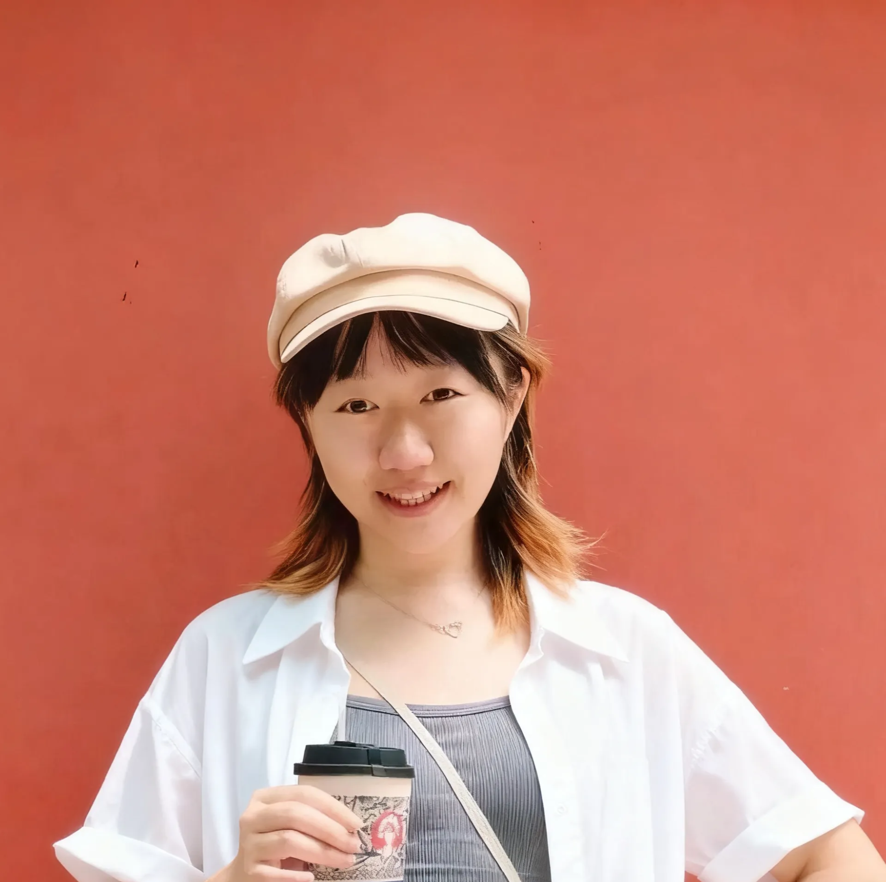

I am “Holly” Tianqi Song (she/her), a PhD candidate in Computer Science at the National University of Singapore, advised by Prof. Yi-Chieh (EJ) Lee . I work in human–computer interaction (HCI), with a particular focus on how humans and AI systems co-exist, interact, and mutually influence one another in increasingly social and intelligent environments. More >
Prior to my PhD, I earned my bachelor’s degree in Computer Science and Technology from Zhejiang University, along with an Honors Program in Humanities and Social Sciences at the Chu Kochen Honors College .

Tianqi Song†, †, , ,
CSCW 2025 Methods Recognition
Tianqi Song, , Tianwen Zhu, ,
, Tianqi Song,
Tianqi Song, , , ,
, Tianqi Song, , ,
Tianqi Song, , , , ,
Spotlight Talk
, Tianqi Song, , ,
, Shuyu Yin, Tianqi Song, Peinuan Qin,
Renzhong Li, Weiwei Cui, Tianqi Song, Xiao Xie, Rui Ding, Yun Wang, Haidong Zhang, Hong Zhou, Yingcai Wu
Haoyu Zuo, Qianzhi Jing, Tianqi Song, Lingyun Sun, Peter Childs, Liuqing Chen
Organisers
Program Committees
Reviewers
Teaching Assistants
Volunteers
Beyond research, I'm a seeker of human well-being and a big fan of Taylor Swift 💜. In my spare time, I enjoy swimming, drawing/reading comics or eating McDonald's fries with mixed ketchup and chili sauces. Hope to share McDonald's together with you! 🍟